v1 was executed as written (slices 0–6, 11 commits, 228 tests) and the result was bad, because the plan was wrong in three places. This page shows each ThreadViral reference screen beside what ours becomes, every control on it, and the seven slices that get there. The handoff for the executing session is docs/plans/2026-09-22-studio-v2.md.
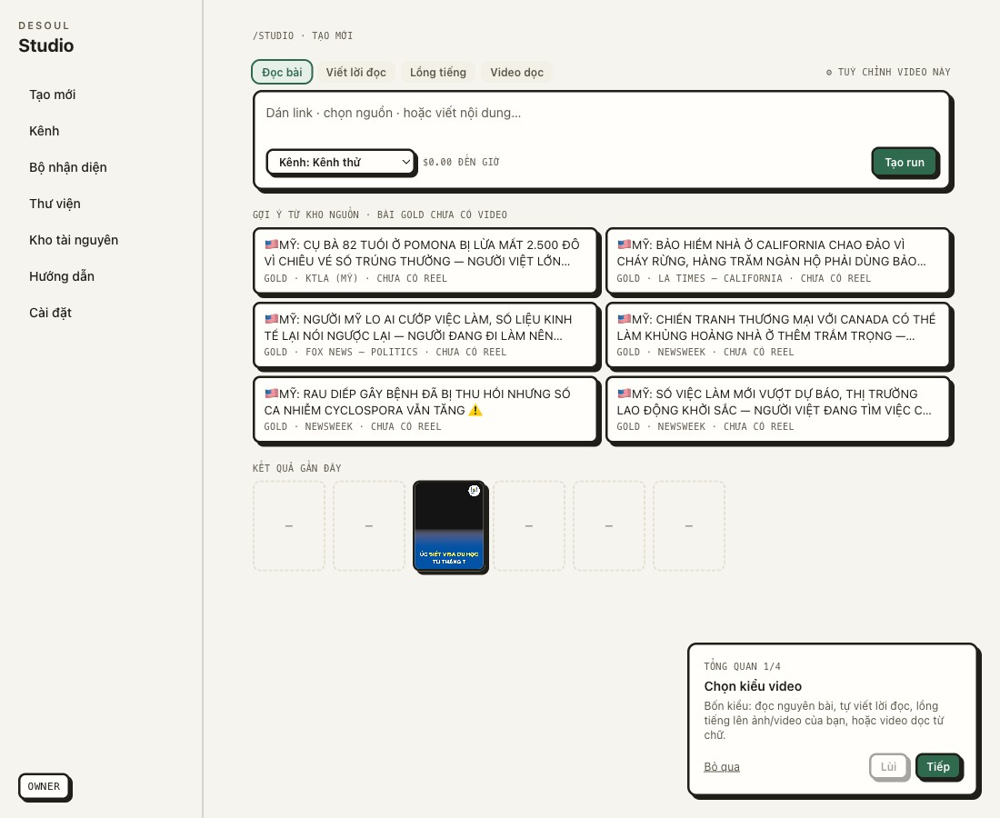
A · no door to the pipeline The only source configuration is a one-source-per-channel wizard. No feed list, no filter, no output shape. The crawler's real config lives in the old SPA's Settings and Studio cannot see it. A pasted link on a gold channel is silently ignored (steps/fetch.ts:cfgFor) and the first listed item is used.
B · four selects and three checkboxes OverrideDrawer has 8 controls; the kit editor is schema-driven with labels = schema keys (card.engine is a label). ThreadViral's configurator has 8 tabs and ~40 controls, a 12-control drawer and a layer editor. v1 marked half of them "engine" or "later" and made the layer editor conditional.
C · preview once per page load previewStep runs server-side when the page opens; a changed option updates client state only; the preview refreshes after the next POST advance. The reference redraws the phone frame on every control.
and the chips Đọc bài · Viết lời đọc · Lồng tiếng · Video dọc on the reference New page is the pipeline's step rail, not four kinds of video. v1 made them "modes"; the executor built "Chọn kiểu video". v2 removes the modes.
sources/detect.ts). The fetch step shows the item and its comment pool before anything is spent.ref/tv-12, ref/tv-25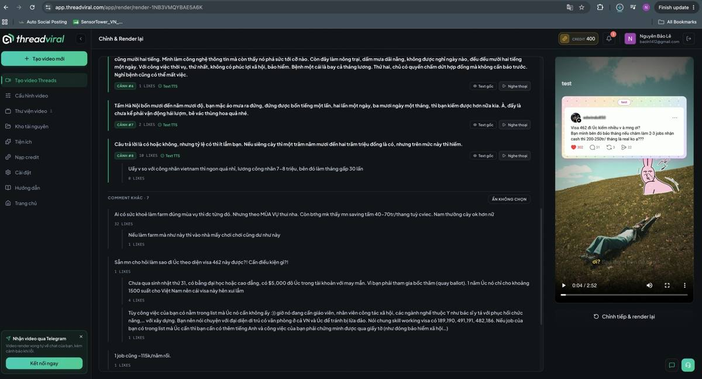
The same screen component serves the four other steps and the pipeline's five. Duyệt trước khi dựng is what makes every step wait; off, the run walks the rail and only Video costs anything.
keep · existsadd · build in v2overlay · ffmpeg after make-reel.pyengine · separate plannever · with the reason
Open a tab to see the reference screen and its controls. Labels are the UI labels. The kit editor's centre canvas is the same preview the run page uses, on a sample item, so a kit change is seen on a real frame.
tv-13-new-brandkit-tip.jpg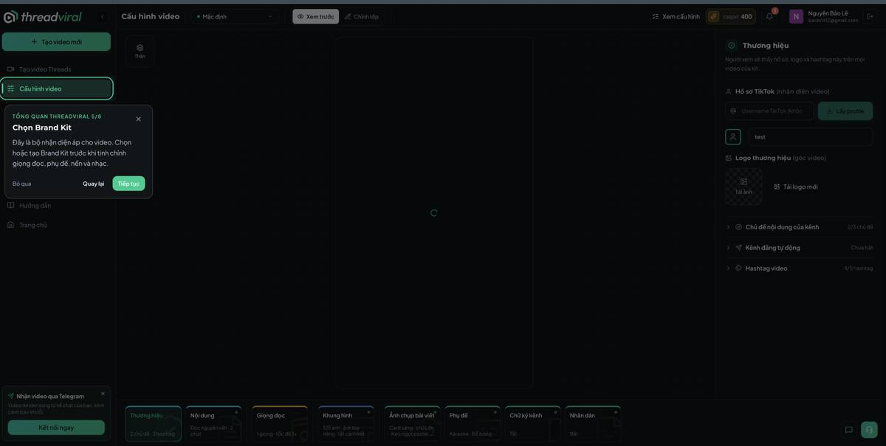
| ThreadViral control | Ours | status |
|---|---|---|
| Tên kênh · avatar · logo | have: channel row | keep |
| 2 chủ đề · 3 hashtag | add: kit.topics, kit.hashtags → draft step | add |
| Lấy profile TikTok | — | never (no TikTok tool) |
tv-25-config-content.jpg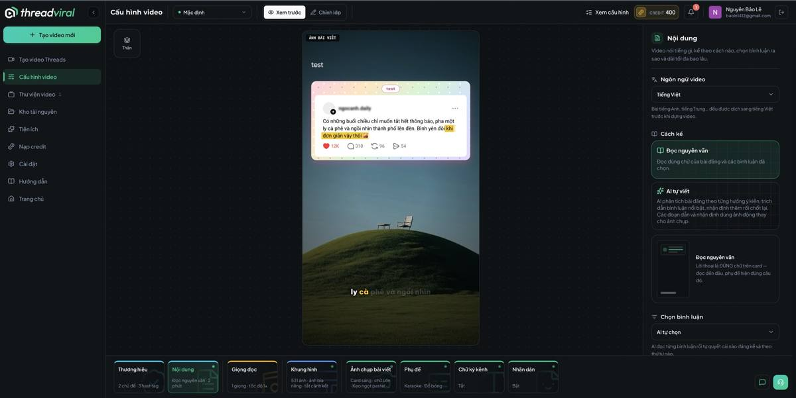
| ThreadViral control | Ours | status |
|---|---|---|
| Ngôn ngữ video (VI; EN/CN posts translated first) | have: markets are per language; add translate-to-VI in draft | add |
| Cách kể: Đọc nguyên văn / AI tự viết | have: gold pass-through vs lib/gold.ts rewrite | keep |
| Chọn bình luận: AI tự chọn / tự chọn | have: comment pool (v1 S1) | keep |
| Dài tối đa (2 phút) | add: duration band → budget gate | add |
tv-26-config-voice.jpg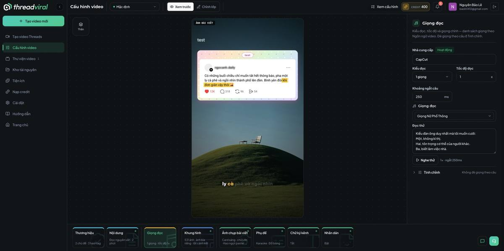
| ThreadViral control | Ours | status |
|---|---|---|
| Nhà cung cấp (CapCut) · Giọng (Nữ phổ thông) | have: edge-tts voices (vi-VN-HoaiMy/NamMinh); bao clone later | keep |
| Tốc độ đọc (1x) · Khoảng ngắt câu (250 ms) | have: edge-tts rate; add pause ms between sentences | add |
| Đọc thử + Nghe thử | add: /api/studio/tts-sample (one sentence, cached) | add |
| Tinh chỉnh: một giọng cho cả video / theo câu | one voice per reel by design | engine |
tv-27-config-frame.jpg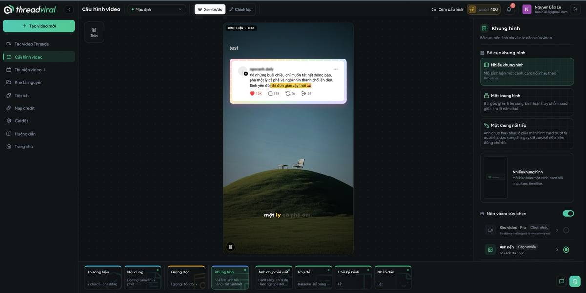
| ThreadViral control | Ours | status |
|---|---|---|
| Bố cục: Nhiều khung hình / Một khung hình / Một khung nối tiếp | have: one layout in make-reel; add the other two as compositor modes in the overlay step | engine-lite |
| Kho video nền (531) · Ảnh nền | have: bg images in data/; add Assets uploads | add |
| Ảnh bìa riêng · tắt cảnh kết | add flags | add |
tv-28-config-card.jpg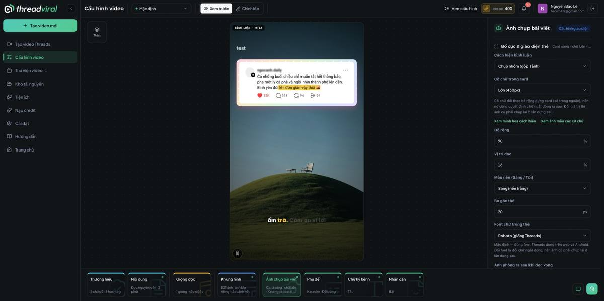
| ThreadViral control | Ours | status |
|---|---|---|
| Bố cục & giao diện thẻ (card sáng · chữ lớn · kẹo ngọt pastel) | have: /api/image/card bg + presets | keep |
| Cách hiện bình luận: chụp nhóm / từng ảnh | add: card variants | add |
| Cỡ chữ trong card (Lớn 430 px) · Độ rộng % · Vị trí dọc % · Màu nền sáng/tối · Bo góc px · Font (Roboto giống Threads) | have some (ratio, bg); add size, width, y, radius, font as card params | add |
| Ảnh phóng ra sau khi đọc xong | zoom-out after read | engine |
tv-29-config-subtitles.jpg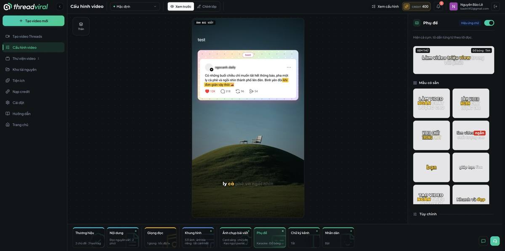
| ThreadViral control | Ours | status |
|---|---|---|
| Hiệu ứng chữ on/off | have: captions on/off | keep |
| Mẫu có sẵn (wall of 8 styles: karaoke, coloured words, shadow…) | have: captionPresets.ts — wall UI missing | add |
| Tùy chỉnh: font, size, colour, highlight, position | add: preset editor fields | add |
tv-30-config-signature.jpg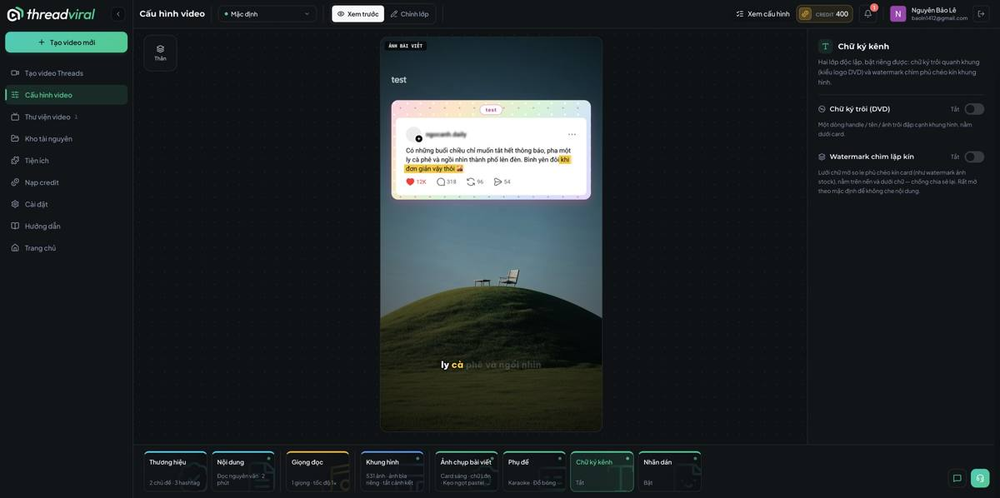
| ThreadViral control | Ours | status |
|---|---|---|
| Chữ ký trôi (DVD) — handle drifting around the frame | overlay step: drifting text via ffmpeg drawtext expression | add |
| Watermark chìm lặp kín — tiled faint text | overlay step: tiled PNG | add |
tv-31-config-sticker.jpg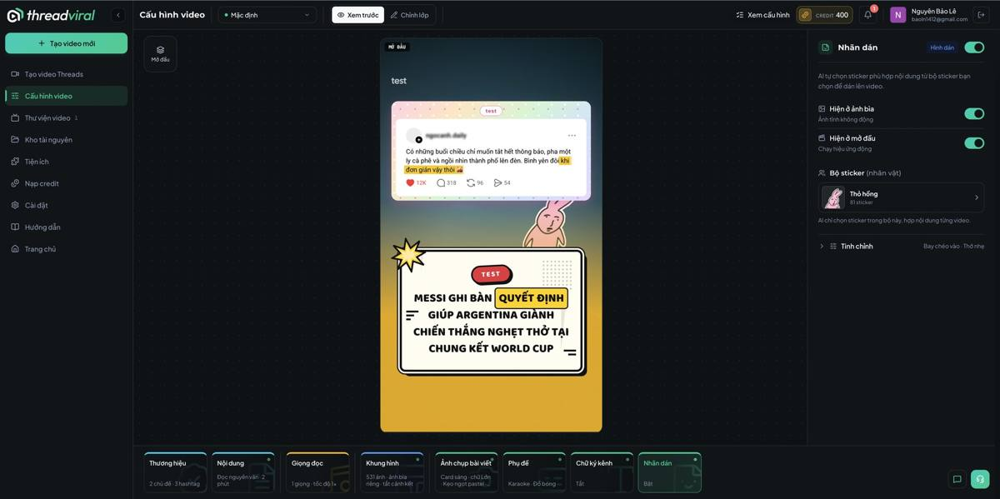
| ThreadViral control | Ours | status |
|---|---|---|
| Bộ sticker (nhân vật) · AI chọn theo nội dung | Assets sticker sets + a pick step (Gemini Flash, cheap) | add |
| Hiện ở ảnh bìa (tĩnh) · Hiện ở mở đầu (động) | cover: overlay PNG; intro animation: fly-in via ffmpeg overlay expression | add |
| Tinh chỉnh: kiểu bay vào · độ thỏ nhẹ | two presets | add |
tv-33-layers.jpg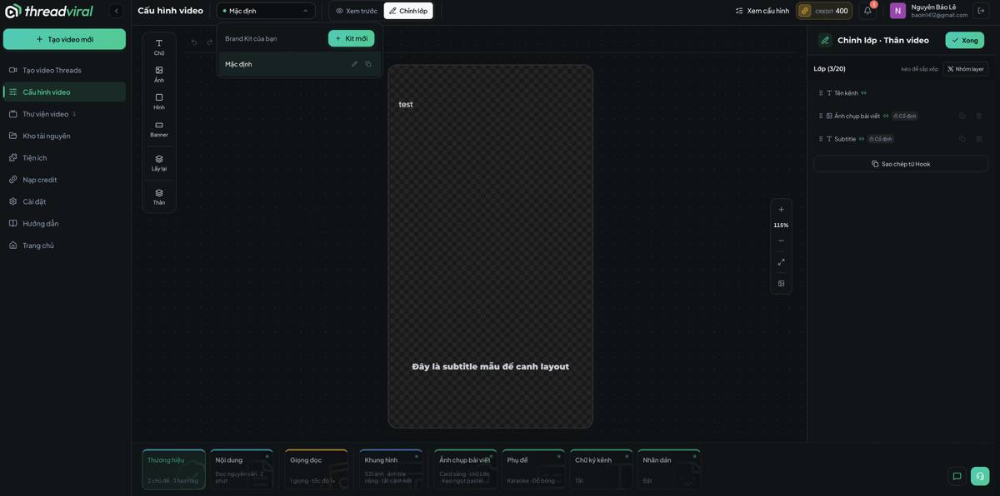
| ThreadViral control | Ours | status |
|---|---|---|
| Layers list (3/20): Tên kênh, Ảnh chụp bài viết (pinned), Subtitle (pinned); drag to reorder; group; copy from Hook; zoom | a canvas over the card/frame preview; layers stored in the kit in frame-relative units; rendered by the overlay step | add (was 'conditional' in v1 — owner overruled) |
ref/tv-24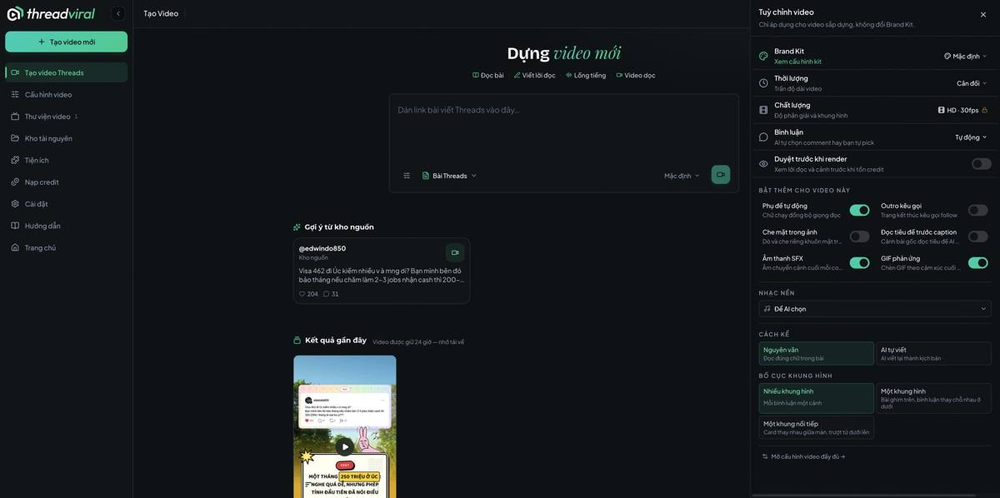
| ThreadViral | Ours | status |
|---|---|---|
| Brand Kit | kit pick | keep |
| Thời lượng (Cân đối) | duration band | keep |
| Chất lượng HD 30 fps | one quality | never |
| Bình luận: Tự động / tự pick | comment mode | keep |
| Duyệt trước khi render | auto_continue off — every step waits | keep |
| Phụ đề tự động | captions flag | keep |
| Outro kêu gọi | end card from the kit, overlay step | overlay |
| Che mặt trong ảnh | our images are cards, no faces | never |
| Đọc tiêu đề trước caption | draft composes the title first | add |
| Âm thanh SFX | transition sound between scenes, from Assets | overlay |
| GIF phản ứng | — | later |
| Nhạc nền (AI chọn / pick) | music tier + pick from Assets | keep+add |
| Cách kể · Bố cục khung hình | same as kit tabs, per run | keep |
| Mở cấu hình video đầy đủ → | opens the kit editor with this run's values | add |
StepOptions, the preview route, debounced hook, cachestests/shots/pairs/. "Looks fine to me" does not close a slice. Nothing that works today is removed: the old SPA, the Tạo Video modal, deploy/make-reel.py, the v1 pages.Read docs/plans/2026-09-22-studio-v2.md fully, then CLAUDE.md, then skim docs/plans/2026-09-22-studio-editorial-ux.md §3–§5 for the contract and tables you are extending. Open docs/plans/ref/ and look at every screenshot once. You are executing Studio v2: slices 8–14 in order, each committed green (npm test = vitest + Playwright) before the next. Nothing that works today is removed: the old SPA, PostCard's Tạo Video modal, deploy/make-reel.py (never edited), the v1 pages. Every slice ends with a screenshot of our screen placed BESIDE the reference screenshot it answers, in tests/shots/pairs/<slice>-<screen>.png; that pair is the STOP artefact. Python is /opt/homebrew/bin/python3. Only the Next server opens data/lake*.duckdb. Use `rtk proxy curl` for any pipeline fetch. A gate says how many things it checked; a finding is fixed or reported, never shipped past. Do not ask the owner to choose between options this plan already decides.